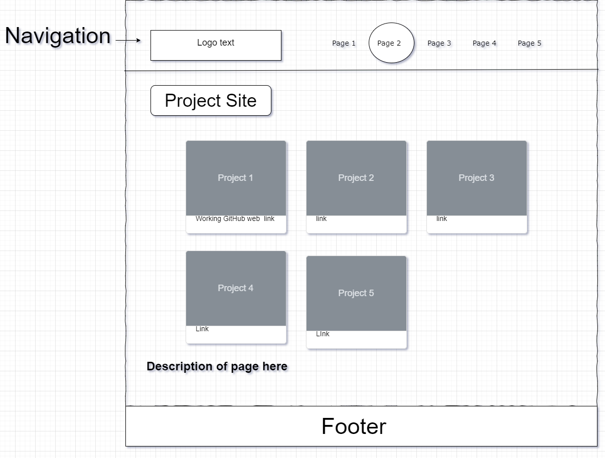
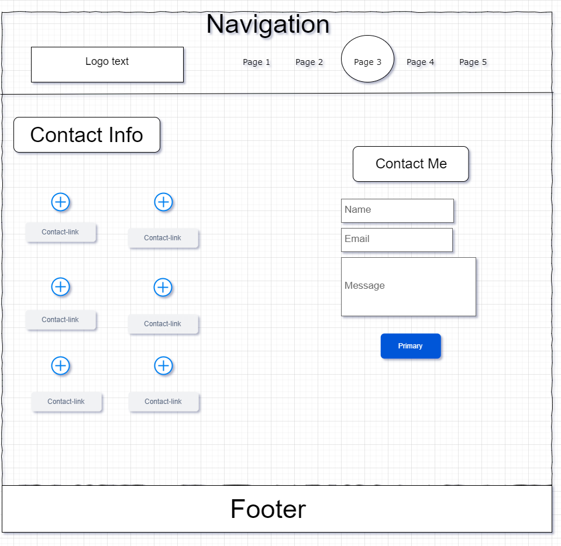

Site Report
Sandesh's Portfolio Website Report
1. Project Overview
This portfolio website is an organized and aesthetically pleasing, designed which showcases the skills and understanding of Sandesh Thapa. This report analyzes the design, functionality, user experience, responsiveness, and development experience of the website.
i. Home page
The Index page/Home Page is the main entry point for the website. It contains a brief introduction of Sandesh Thapa along with some interests/passions. This page also contains a hero image and a short inspiring quote by Takehiko Inoue which is meant to motivate and resonate with the viewers.
ii. Project page
The page contains all of the on-going and completed projects to show the varity of work that has been accomplished or will be accomplished. The preview image of the projects also serves as a link to the github repository for that project, consisting of all the files, information and detailed description regarding that project repository. The future project that will be completed/worked on will also be updated in this page.
iii. Contact page
The contact page serves as a crucial page for users to get in touch directly through various social media links such as Instagram and GitHub profiles, along with university and personal email addresses. Users can also send messages directly through the site by filling out the 'Contact Me' form, made possible using the https://web3forms.com website.
iv. Video Demonstration page
The Video Demonstration page consists of thumbnail and a link, which will redirect the user to MediaSpace Northampton, where they can view a video that showcases the website to the viewers. The video will provide a high-quality insight on the project's detail and functionality.
v. Site Report page
The Site Report Page provides a detailed analysis and documentation of the portfolio website, focusing on topics such as design decisions, website responsiveness, and the development process.
2. Design
The site features a very clean and modern design complemented by comfy and welcoming color schemes. The page layout and navigation through the pages are also done with user intuition in mind ensuring easy navigation. For the color theme, coffee and similar pastel color have been used. The color theme and website design are kept consistent throughout all the pages for more cohesive look. Easily recognizable icons have been used for easier navigation. Some elements use highlighting theme to highlight important elements without degrading the user experience and keeping a consistent cohesive design.
3. Functionality
The website consists of various interactive elements such as buttons, links and forms, which are functional and user friendly. The contact form makes it easier for the user to get in contact. The project page consists of various projects, which on click will direct the user to the Github repository where they can read the README file for all the information. The navigation menu will highlight the page which the user is currently on. For mobile users, there's a navigation bar that, when tapped will display a menu for easy page navigation. This feature is made possible using simple JavaScript.
4. Responsiveness
Mobile Compatibility: The site adapts well to various device sizes, maintaining functionality on mobile devices. The interactive elements are well-optimized for touchscreens, ensuring consistent usability across different devices. Various tests were conducted on different devices using inspect element to ensure responsiveness. Any issues identified were promptly addressed to ensure smooth operation across all devices.
5. Performance
The site operates efficiently with minimal delay, thanks to its lightweight design, ensuring smooth performance across all tested browsers on both PC and mobile platforms (Opera GX, Microsoft Edge, Chrome, Safari, Firefox). The use of lightweight images maintains website quality without compromising load times. Some of the images were edited to lower the size of them using GIMP(Photo editing Software) without effecting much of the image quality. Users can navigate between pages seamlessly with minimal delays. Additionally, videos are linked externally to maintain optimal site performance.
6. User Experience
The intuitive menu design is intended for users to easily navigate the pages. Incase of missing images, an alternative text is implemented to show an error free page. All of the content in the site are made easy to read with cohesive pattern. The faster load time of the website prevents user dissatisfaction and ensures a smooth browsing experience. The user can easily use the webiste, regardless of the device and application. The website has been made engaging and intitive for a great and positive user experience without losing functionlaity and usability.
7. Areas for Improvement
As a simple and modern website, there is plenty of room for improvement to the site with addition of various functionality and optimization. Such as:- Dark mode: The current website currently features only one color theme, which may not appeal to all users. For people who prefer the more modern look of dark mode. The website could consist of a dark or light mode toggle for the user to choose according to their preference, which won't effect their content viewing experience.
- Content Optimization: The site can definitely contain more information that are relevant to the site. Also the content could use more CSS for font sizes, weight and colors for improving engagement and readability.
- Interractive elements: The site can definitely benefit from addition of more interactive elements such as effects and animations without being overwhelming. It could also use buttons like "Read More" to expand on certain topics if the user wants more information.
8. Web Development
This section will constist of a log of my webdevelopment process, coding process and debugging process.
i. Web development Process:
At the starting phase of my website, i looked up various portfolio of other people to get a general understanding of what elements needs to be there for a proper portfolio website. Then i started to write down some of the ideas that i might use, from any of the websites.
Now it was time to start creating the website. So i designed wireframes for all 5 pages in draw.io. The wireframe were created to have a consistent design and general idea of where all the element will be kept in the website to be visually pleasing. Here are the wireframes i created:
-
Main layout:This is the main layout for all of the pages where i used the grid layout. So that all the elements that i would create would stay where i had intended them to stay, regardless of the future things that i would add on.

-
Home page:

- Project page:
- Contact page:
-
Video Demonstration page:

-
Site Report page:

I didn't want to overwhelm visitors on the home page, so I kept it simple and easy to navigate.
On the Project page, I focused on minimal details, providing clear titles. Users can click on each project to access full descriptions and documentation on the GitHub repository.
For the contact page i wanted to link all of my social media on one side, for people to get in contact with me easily. But if anyone wants to send direct message, then they can send it from the website itself.
On the Video Demonstration page, instead of embedding videos with iframes (which are often blocked), I instead used a clickable thumbnail that direct users to MediaSpace Northampton for viewing.
At first my idea was to use iframe to link and open up the report pdf. But after consultanting with my module teacher, chose not to do so. I wanted to make the site page to have a pdf document feel, so i created it to look more like a document file.
ii. Coding:
The coding process was really time-consuming. As I had to learn new HTML and CSS concepts, like grid layout, which was tricky at first but really useful once I got the hang of it. For the contact page, I used multiple grid layouts, which was complicated at first but effective in the end. I also tried to use some animations, but few of them didn’t fit the website and used absolute positioning, so I removed it entirely as we were instructed not to use absolute positioning.
For the home page, I switched from grid to flex for better fitting elements. I used clear class names like grid_container_main for easy understanding and easier future modifications/changes. I also added comments to my CSS to keep it organized by creating sections with them. Initially, I had separate CSS files, but later I combined them into one to reduce redundancy and load time.
I also didn’t use grid-area because it was a bit complicated and I preferred grid-column and grid-row. Overall, coding wasn’t as hard as I thought, but it took alot of time to learn and implement everything properly.
iii. Debugging Process/Problem Solving:
Now it was time for debugging. There were alot of bugs to fix for my site. The first problem i had to deal was that all of my files for the site were cluttered in a single folder. So i created 2 folder within my website folder, where one would be serve for all the assets used for the website and another would consist of css and js file for the website. Then i had to go to my code and add locations for those files in my code.
Another issuse that i had faced was with my navigation bar for my site. As it wasn't responsive and didn't have the hamburgur icon. I tried to use the checkbox to turn the menu on and off with the hamburgur icon. But it didn't work out. My thought was that because i had used the grid layout as my main layout, it wasn't able to turn on/off the menu for my navigation bar. So instead i had used javascript with a quick tutorial from online, and implemented it on my site. Then made the hamburgur icon work well.
I also used the W3C validator to find out some of the bugs and issues within my HTML. It was a bit easy to make my site responsive, as i just had to tweak out some of the code with media query and adjust it accordingly. To ensure the page only has vertical scrolling and responsiveness. I had to fix it by adjusting and adding some code. Overall, the debugging was a bit tough to do. But it was a necessary part to make my website functional and be tested out properly.
9. Module Experience
This was such a fun module. I got to learn various concepts and figure out how to implement them properly. Since it was an individual process, I did a lot of research and found clever solutions to my problems. This helped me understand how websites are made and gave me a new appreciation for the effort people put into creating them.
The module leader was incredibly understanding and helpful. He taught us well, making the topics easy to understand. His feedback was very valuable for creating this website, especially when I faced challenges with certain elements.
This module also pushed me to think critically about solving problems and finding useful resources. Overall, it was a rewarding experience that improved my skills and knowledge.
10. Page Validation
The HTML and CSS file for the site have also been validated. This is done to ensure the code quality, credibility, and troubleshooting. Here are the Validation screenshot done for this website:i. HTML Validation
For the validation of the hmtl pages https://validator.w3.org has been used, as recommended by the module teacher.
ii. CSS Validation
For the validation of the Css file https://jigsaw.w3.org/css-validator/ has been used, as recommended by the module teacher.
11. Video Demonstration URL
The video is a short demonstration to showcase the website and Some of the CSS concepts used in creation of the website. The video was recorded and edited through OBS Studio and Davinci resolve respectively. Also The video has been uploaded to MediaSpace Northamption. Here is the link to the video
12. Conclusion
Sandesh's portfolio website showcases a simple and creative website in a very user-friendly manner. It features a clean design with intuitive navigation and a responsive layout, with a seamless experience across all devices and browsers. This website is made from the continuous improvements done throughout its creation. In conclusion, this project has been a valuable learning experience in web development, highlighting the importance of design principles, performance optimization, and user-centricity in creating impactful digital experiences.
13. References
i. Image/icon References:
- All of the icons that were used for this Web Project are open source icons which were obtained from https://boxicons.com . The icons that are used were(as named in the website):
- home
- task
- videos
- report
- contact
- menu
- x
- gmail
- envelope
- github
- phone
- map
- All of the Images used for this project were obtained from https://unsplash.com and are non-copyrighted images which were then modified to fit the content of the website.
- https://unsplash.com/@clark_fransa Creator: Arnold Francisca
- https://unsplash.com/@antoinerault Creator: Antoine Rault
- https://unsplash.com/@lucabravo Creator: Luca Bravo
ii. Design Inspiration:
The design including color schemes and layout, were inspired from various portfolios found in site like https://weblium.com/blog/best-portfolio-website-examples/ and https://www.hostinger.com/tutorials/web-developer-portfolio
iii. Code References:
- The responsive navigation menu and the java script used for it was inspired and referenced from https://youtu.be/U8smiWQ8Seg?si=sHFBEnAEmeN8HZsv by coding2go.
- The Contact Form system used in this project was influenced by and referenced from https://youtu.be/-HeadgoqJ7A?si=m9V7eTeELaNEhphg by GreatStackDev